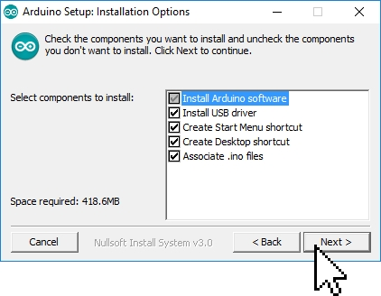

Зайдите на официальный сайт Arduino и выберите, из предложенного списка, операционную систему на которой работает Ваш компьютер. В данной статье мы рассмотрим установку Arduino IDE на операционную систему Windows. Выбрав первую строку «Windows Installer» Вы установите Arduino IDE (как устанавливаете любые другие программы), а выбрав вторую строку «Windows ZIP file for non admin install» Вы скачаете ZIP-архив с папкой программы, которую сможете запускать без установки (даже если у Вас нет прав администратора Вашего компьютера).
Рис. 8: Офицальный сайт Arduino
Вне зависимости от того, какую операционную систему Вы выберите, Вам будет предложено поблагодарить разработчиков, именно предложено, тут дело Ваше.
Рис. 9: Поддержка Arduino
Если Вы просто хотите скачать программу, то нажмите на кнопку «JUST DOWNLOAD», если хотите скачать программу и поблагодарить разработчиков, способствуя дальнейшему развитию ПО, то нажмите на кнопку «CONTRIBUTE & DOWNLOAD».
После завершения загрузки, файл должен находиться в папке: « Этот компьютер > Загрузки » (если Вы не указали иное место для сохранения файла).
После загрузки установщика Arduino, запускаем скаченный файл. Далее подряд будут появляться следующие сообщения:
Рис. 10.1: 1 Этап

Рис. 10.2: 2 Этап
Рис. 10.3: 3 Этап
Рис. 10.4: 4 Этап
Рис. 10.5: 5 Этап
В процессе установки, над окном 4 сообщения, могут появляться окна Windows запрашивающие у Вас разрешение на установку драйверов:
Рис. 11: Безопастность Windows
Разрешайте установку драйверов нажимая на кнопку «Установить», эти драйверы позволят определять и работать с платами Arduino подключёнными по шине USB.
На этом установка Arduino IDE завершена.